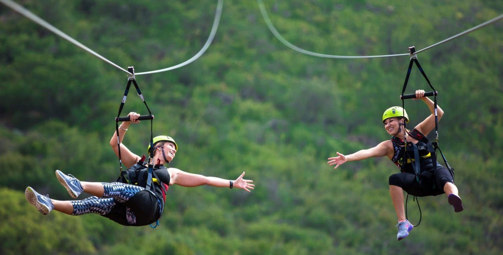

Экстремальный отдых
Если вам надоел ленивый пляжный отдых экстремальные виды спорта - прекрасная возможность с пользой провести отпуск. Покорение рек Карелии и вершин Хамар-Дабана, многодневные конные туры в Адыгее, дайвинг в уральских пещерах, серфинг на Камчатке, пешеходные туры в Алтае и на Кавказе, восхождение на вулканы - самые смелые фантазии реальны благодаря богатой природе России. Экстремальный отдых завоевал горячую любовь туристов и стремительно развивается. Раньше таким турам отдавали предпочтение опытные спортсмены и путешественники, а сегодня отправиться в активный тур можно даже с детьми. Яркие впечатления от похода к горно-алтайскому озеру Манжерок ребенок будет помнить долго, а о безопасности и комфорте отдыха позаботятся опытные туроператоры.
Покорением крутых гор и высоких пиков могут похвастаться лишь профессионалы. Но это совсем не значит, что для новичков нет места в альпинизме. Летом и осенью в России лучший экстремальный отдых - это восхождение на гору Белуху в Алтае, высотой всего 4500 метров. Маршрут очень комфортный, без сложных подъемов и отвесных спусков. А внизу, на турбазе, смогут остаться те, кто не решились в первый раз покорять высоту, и насладиться завораживающими взгляд видами.
Автомобильные туры, джиппинг и туры на снегоходах
Мечтаете быстро и без особых хлопот добраться до девственных природных уголков страны? К вашим услугам комфортные автомобильные туры и джиппинг. Продуманные до мелочей маршруты перенесут Вас от повседневной суеты к удаленным и умиротворенным местам Карелии, Алтая, Европейской части России и других пленительных регионов нашей богатой Родины.
Конные и велосипедные туры
Сблизиться с природой помогут многодневные конные туры по Карелии, Уралу, Алтаю, Кавказу. В такие путешествия можно отправляться круглый год. Особенно много впечатлений от конных прогулок получают дети и подростки. Они испытывают настоящий восторг от общения с животными, охотно помогают ухаживать за лошадьми, а некоторые привозят эту любовь домой, и начинают заниматься конным спортом.
Пешие и лыжные походы треккинг-туры
Настоящая романтика экстремальных походов знакома каждому из нас - песни у костра под гитару, пища на открытом огне, веселая компания и единение с природой. Для многих такой отдых в России был и остается любимым с самого детства. Новые впечатления и красоты Алтая, Карелии, Урала и Кавказа манят настоящих путешественников, и все, что вам для этого нужно - удобная обувь и рюкзак за спиной.